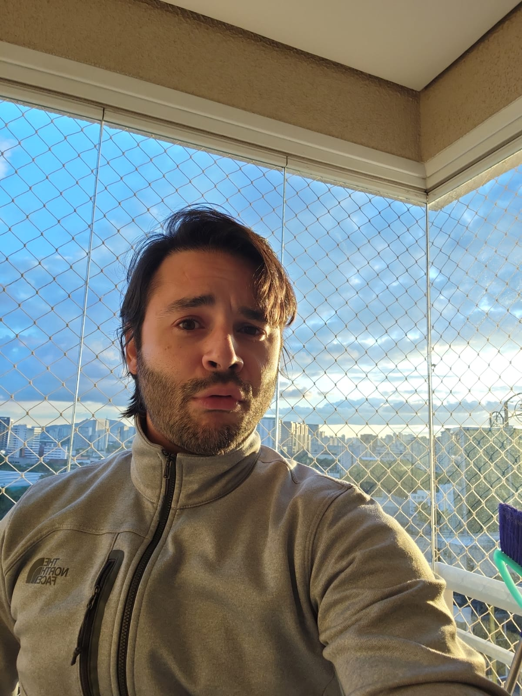

Explore Brazil - Land of Beauty

Rio de Janeiro
Rio de Janeiro, frequentemente chamada de "Cidade Maravilhosa," é conhecida por suas deslumbrantes praias como Copacabana e Ipanema, a estátua do Cristo Redentor, o Pão de Açúcar e suas vibrantes celebrações de carnaval.
Seu litoral estonteante atrai turistas de todo o mundo, oferecendo oportunidades para relaxar à beira-mar, praticar esportes aquáticos e saborear a deliciosa culinária local.

Iguazu Falls
As Cataratas do Iguaçu, localizadas na fronteira entre Brasil e Argentina, são uma das cachoeiras mais impressionantes do mundo. A imensa força e beleza das quedas a tornam um destino imperdível.
A exuberante paisagem da região é um paraíso para os amantes da natureza, com várias trilhas para caminhadas e observação de pássaros.

Amazon Rainforest
A Floresta Amazônica, frequentemente chamada de "Pulmão do Mundo", é a maior floresta tropical do mundo. Ela abriga uma incrível diversidade de fauna e flora.
Explorar a Amazônia é uma experiência única, onde você pode fazer passeios de barco pelos rios, observar animais selvagens em seu habitat natural e aprender com as culturas indígenas locais.

Salvador
Salvador, the capital of the Bahia state, is known for its rich Afro-Brazilian culture, historic architecture, lively music, and delicious cuisine.

Pantanal Wetlands
The Pantanal is the world's largest tropical wetland and an excellent destination for wildlife enthusiasts. It offers opportunities to spot jaguars, capybaras, and a variety of bird species.